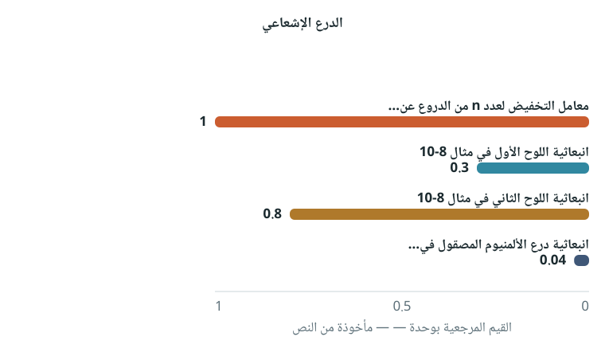

الدرع الإشعاعي
Radiation Shield
سطح عاكس يوضع بين سطحين فيضيف مقاومة إشعاعية في المسار؛ والحرارة لا تختفي بل تتوزّع على مقاومتين بدل واحدة.
الدرع الإشعاعي صفيحة منخفضة الانبعاثية تُوضع بين سطحين فتُخفض انتقال الحرارة بالإشعاع بينهما. الدرع لا يضيف حرارة إلى النظام ولا يزيلها منه، بل يُدخل عقدة حرارية ومقاومتين إشعاعيتين مكان مقاومة واحدة، فيتباطأ التدفق الكلي. ولمجموعة من n درع بين لوحين متوازيين متساوية الانبعاثية، وبتثبيت حرارة السطحين، تصبح النسبة q مع الدروع = q بلا دروع مقسومًا على (n+1): فدرع واحد ينصّف الانتقال، وثلاثة تخفضه إلى الربع. والسبب أن كل سطح جديد يشعّ من وجهيه فيضيف مقاومتين، والمقاومة الكلية تتناسب مع عدد الأسطح البينية. ويعطي Holman المعادلات (8-48) و(8-49) و(8-50) ومثالًا محلولًا يخفض الانتقال 93.2%.
كيف تعمل الظاهرة؟
كل لوح يشعّ وفق εσT⁴ ويستقبل إشعاع اللوح المقابل. وإدخال صفيحة رقيقة يعني وجود سطحين جديدين، لكل منهما انبعاثيته وحرارته، فيصير المسار: لوح ← وجه درع ← وجه درع ← لوح. ويستقر الدرع على حرارة توازن تجعل ما يستقبله من الوجه الأول مساويًا لما يرسله من الوجه الثاني. وفي تساوي الانبعاثيات تكون T_s⁴ = (T₁⁴ + T₂⁴)/2، وهذا التوزيع هو ما يجعل كل درع يضيف مقاومة إضافية بدل أن يمرّ الإشعاع كما كان.
العلاقة بالأرقام
المقاومة الإشعاعية بين لوحين R = 1/ε₁ + 1/ε₂ − 1. للحالة ε₁ = 0.3 وε₂ = 0.8: R = 3.333 + 1.250 − 1 = 3.583. وبإدخال درع ε_s = 0.04 تصبح مقاومتان: (1/0.3 + 1/0.04 − 1) = 27.333، و(1/0.04 + 1/0.8 − 1) = 25.250، ومجموعهما 52.583. فالنسبة 3.583/52.583 = 0.0681، أي انخفاض 93.2% في التدفق. وفي تساوي الانبعاثيات ε = 0.9: المقاومة بلا درع 1.222، ومع ثلاثة درع 4.889، والنسبة 0.25 أي 1/(3+1) بالضبط.
مفاهيم متقاربة
الدرع يضيف مقاومة إشعاعية بين أسطح صلبة، والطلاء العاكس يقلل انبعاثية السطح الواحد نفسه؛ فالأول يضاعف عدد الأسطح البينية، والثاني يغيّر قيمة ε في مقاومة قائمة. والدرع أيضًا ليس عزلًا يقاوم الحمل: في الهواء يمرّ الحمل عبر فواصل التثبيت ويقصر الدارة الحرارية، ولهذا تُركَّب الدروع في فراغ أو بفواصل رقيقة جدًّا. والنتيجة 1/(n+1) ليست خاصية للدرع بل نتيجة شرطين: تساوي الانبعاثيات وثبات حرارة السطحين.
حدود التطبيق
تنطبق النسبة 1/(n+1) بشروط ثلاثة: انبعاثيات متساوية، وحرارة السطحين ثابتة، وأسطح متوازية لا نهائية بمعامل رؤية واحد. وبغير ذلك تُحسب المقاومة المفردة لكل سطح على حدة بمعامل الرؤية الخاص به. والدرع لا يوقف الحمل والتوصيل عبر المساند، وتدهور انبعاثيته بالتأكسد والغبار يرفعها من 0.04 إلى 0.2 تقريبًا فينهار معظم الأثر. ولا يصح الحساب إذا تغيّرت ε مع الحرارة أو إذا كان الفرق الحراري صغيرًا فصار الحمل الطبيعي في الفجوة مساويًا للإشعاع.

| الكمية | القيمة | المصدر |
|---|---|---|
| انخفاض انتقال الحرارة بدرع واحد | 93.2 % | [1] |
| معامل التخفيض لعدد n من الدروع المتساوية الانبعاثية | 1/(n+1) بلا وحدة | [1] |
| انبعاثية اللوح الأول في المثال | 0.3 بلا وحدة | [1] |
| انبعاثية اللوح الثاني في المثال | 0.8 بلا وحدة | [1] |
| انبعاثية درع الألمنيوم المصقول | 0.04 بلا وحدة | [1] |
| نسبة التدفق مع درع واحد إلى التدفق بلا درع | 0.0681 بلا وحدة | [1] |
المصادر
استشهد بهذا المصطلح
الصيغتان مبنيتان من بيانات الصفحة نفسها: العنوان والتاريخ ورابط النسخة المنشورة.
الدرع الإشعاعي — Radiation Shield. (2026). ديوان المعرفة — انفراد. https://infiradev.com/diwan/terms/term-radiation-shield.html
@misc{term-radiation-shield2026,
title = {الدرع الإشعاعي},
titleaddon = {Radiation Shield},
howpublished = {{ديوان المعرفة — انفراد} — مرجع علمي عربي},
year = {2026},
url = {https://infiradev.com/diwan/terms/term-radiation-shield.html},
urldate = {2026-11-26},
note = {مراجعة علمية: hermes — مراجعة آلية بالتكليف 2026-11-26}
}
راجعه: hermes — مراجعة آلية بالتكليف 2026-11-26 · 2026-11-26 · آخر تحديث 2026-11-26